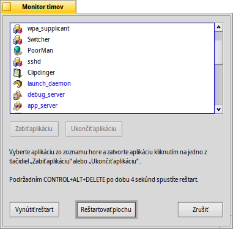

Monitor tímov
Kombináciou CTRL ALT DEL vyvoláte Monitor tímov, ktorý zobrazuje všetky aktuálne bežiace programy.
Programy, ktoré spustil systém sú modré, tie, ktoré spustil používateľ, sú čierne.
Aplikácie, ktoré nereagujú, čo väčšinou znamená pád programu, sú označené červenou. Program môžete skúsiť ukončiť vybraním zo zoznamu a stlačením tlačidla (alebo buď klávesom DEL alebo Q). Ak to nefunguje, skúste (alebo kláves SHIFT DEL čí K).
Terminál môžete vyvolať pomocou OPT ALT T.
Ak Tracker alebo Panel spadol alebo zamrzol, objaví sa nové tlačidlo (možno ale budete najprv musieť ukončiť problematický tím): , ktoré za vás reštartuje Tracker a/alebo Panel.